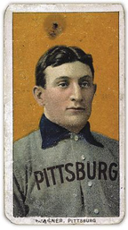

The Grand Daddy of them all

In 2007 a T-206 Honus Wagner baseball card sold for 2.7 million dollars…….that’s right 2.7 Million. The card was estimated to be in Near Mint condition which secured 2 million dollars of the value. Now for the catch…recent court filings were released from the federal courts which showed that Bill Mastro the owner of a Sports Memorabilia Collections had altered the Honus Wagner card in order to receive a higher rating. How did he alter the card you ask? He cut the edges so that the card would be centered. Mr. Mastro has all kinds of problems that he is facing right now to include federal charges that could put him in prison for 3 years, but what about the card. Imagine if someone altered the Mona Lisa or the statue of David. That may seem a little harsh but to Baseball card collectors the Honus Wagner T-206 is the Mona Lisa of all cards.
The 2013 NFL Draft
Who will be the next all-star to come out of the 2013 NFL draft? Will there be one? Currently most draft experts are expecting that the top five draft picks will be three Offensive lineman and two Defensive Tackles. Geno Smith is expected to be the first quarterback to be selected and most don’t have him chosen until late in the first round. What does this mean for card collectors? In my opinion it means two things one there is a chance that you could get lucky and find the gem of the class and two there will be a lot more autograph and game collectible cards this year.